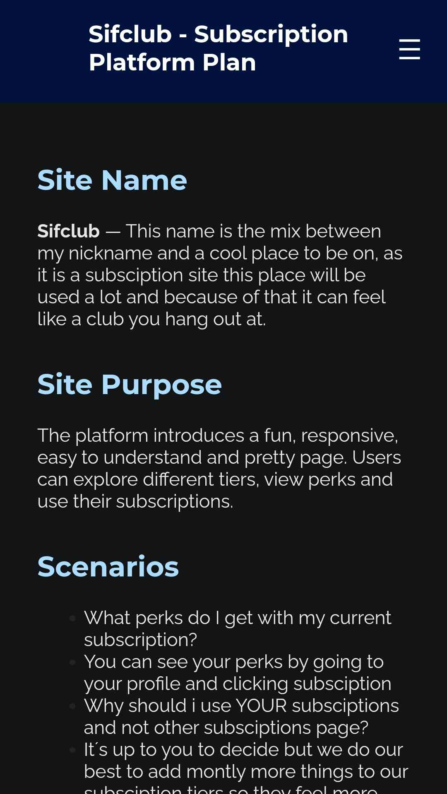
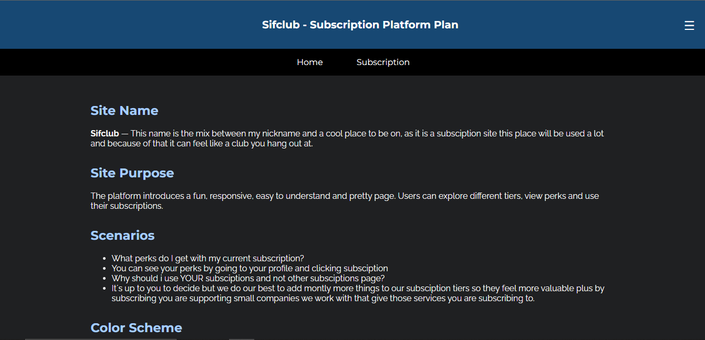

Site Name
Sifclub — This name is the mix between my nickname and a cool place to be on, as it is a subsciption site this place will be used a lot and because of that it can feel like a club you hang out at.
Site Purpose
The platform introduces a fun, responsive, easy to understand and pretty page. Users can explore different tiers, view perks and use their subscriptions.
Scenarios
- What perks do I get with my current subscription?
- You can see your perks by going to your profile and clicking subsciption
- Why should i use YOUR subsciptions and not other subsciptions page?
- It´s up to you to decide but we do our best to add montly more things to our subsciption tiers so they feel more valuable plus by subscribing you are supporting small companies we work with that give those services you are subscribing to.
Color Scheme
- Primary (Dark Blue - #174873): Used for header, buttons, and highlights.
- Accent (Light Background - #f7f9fb): Used for page backgrounds.
Typography
- Montserrat: Used for headers, navigation, and buttons (bold, modern look).
- Raleway: Used for body text (clean and readable).
Wireframes
Below are the wireframes for mobile and desktop views.

